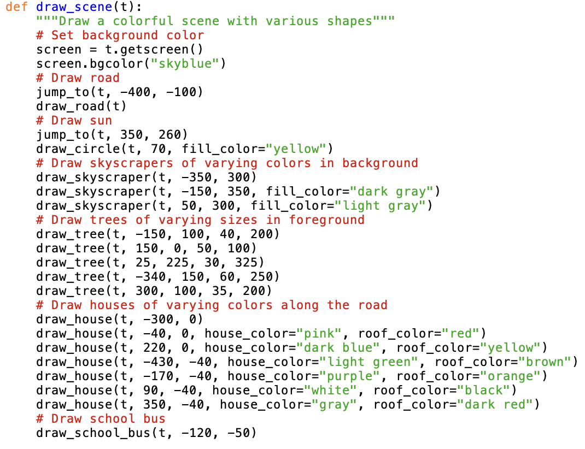
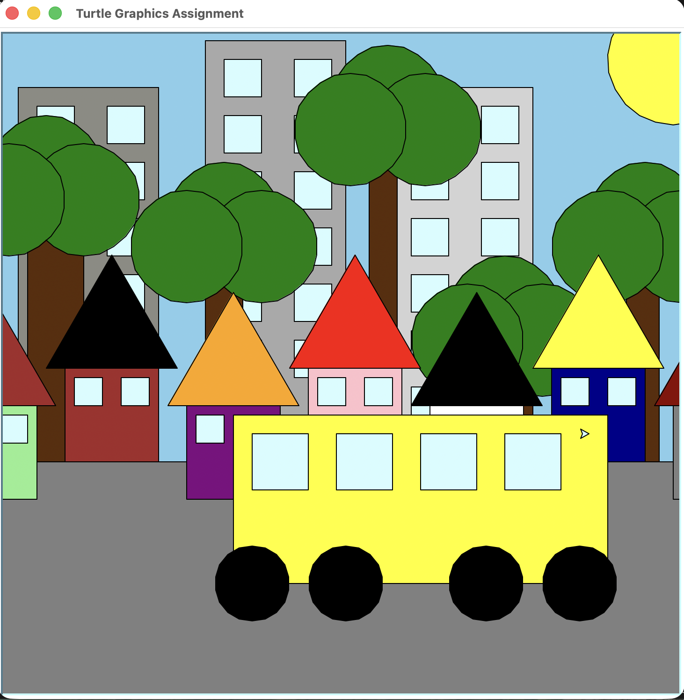

Turtle Project
About the Project
This project uses Python Turtle graphics to draw a city street scene. It combines shape drawing, color fills, and positioning to build a detailed final image. It took a basic scene from a prior project, and required generalization to create a scene that was more complex and visually interesting. The final scene includes buildings, a bus, trees, and a sky with the sun.
Sample Code
This draw_scene function takes the several other functions that I generalized and puts them into one to draw the entire scene. It allowed me to create objects with varying color and size.

Final Scene
